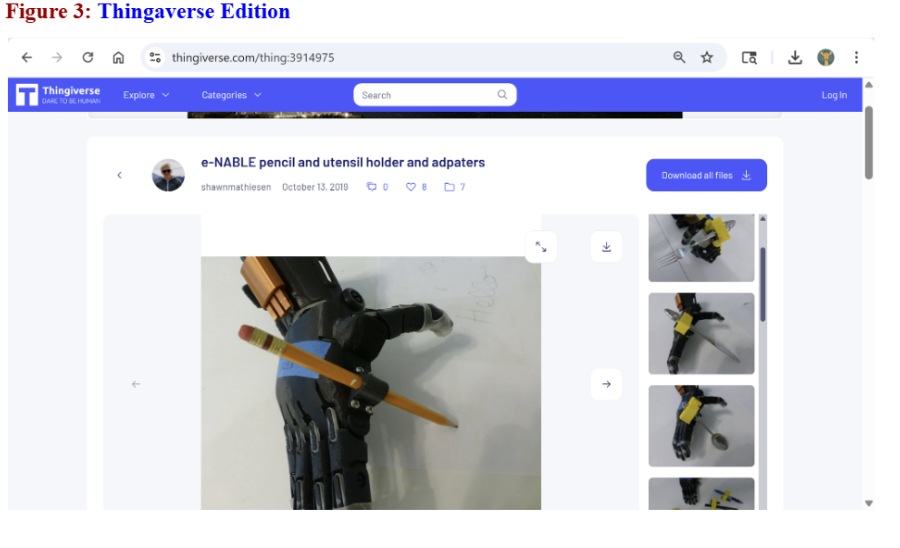
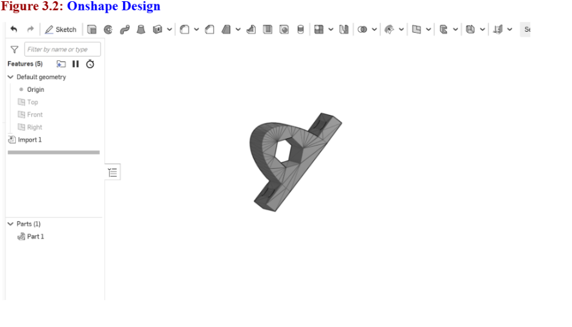
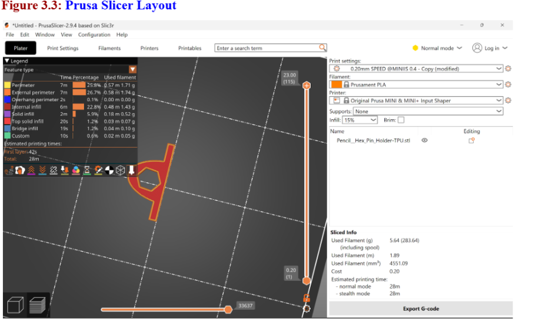
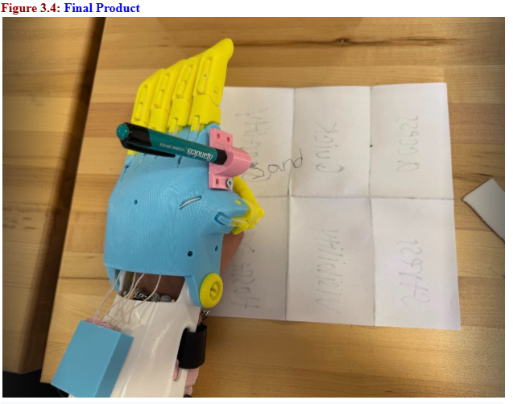
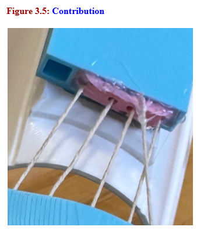

The "system" of writing requires a complex pinch grasp involving the thumb, index finger, and muscular tension. By "subtracting" the thumb's role from the process, there was a shift of the entire burden of holding the pencil to a passive, friction-fit slot on the index finger. This simplifies the device's operation, as the user no longer needs to maintain active cable tension to keep the writing utensil secure.

Onshape layout!

Prusa Slicer layout!

The modification successfully enabled stable writing by using a friction-fit slot that keeps the pencil at a consistent angle relative to the hand. The slot provided enough grip to handle downward pressure without the pencil slipping, allowing for legible writing. During iteration, the initial print was slightly too loose, so the design was adjusted in OnShape by reducing the inner diameter by 0.2 mm to create a more secure snap-fit. A small amount of space was intentionally maintained to allow slight movement, preventing the pencil from being held too rigidly.

To contribute back to the community, this work documents a specific solution for string slippage as a “lessons learned” guide for builders who find the standard knotting instructions insufficient. The issue observed was that at 150% scale, increased mechanical leverage can cause tension strings to slip out of the finger channels. The solution is to first achieve proper tension using a wire guide, then apply a small, localized drop of hot glue to the knot to create a secure mechanical stop and prevent slipping during use. This project also highlighted a gap between basic gripping and true functional utility. For the upcoming capstone, the focus will be on precision manipulation, building on the insight that task-specific, modular attachments—such as a pencil holder—can be more effective than replicating a human hand. The goal is to explore improved interfaces for high-dexterity tasks that are not yet well addressed in the current open-source ecosystem.
